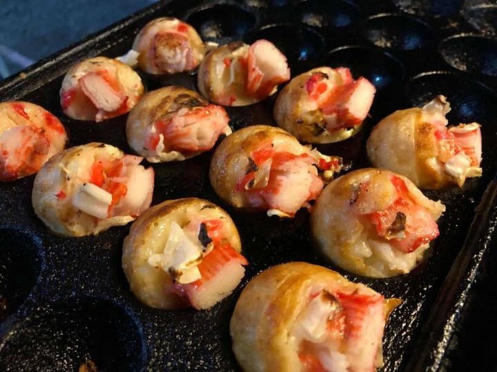

Octopus Takoyaki is a popular Japanese street food and snack. These bite-sized savory balls are made with a batter containing flour, eggs, and dashi (Japanese soup stock). Diced octopus is a key ingredient, giving the dish its name. The batter is poured into round molds, and a piece of octopus is placed in the center. Once cooked, the takoyaki is typically brushed with a special takoyaki sauce, mayonnaise, bonito flakes, and seaweed flakes, creating a flavorful and enjoyable treat.
Prawn Takoyaki
Prawn Takoyaki is a variation of the traditional Japanese street food, Takoyaki, where diced prawns are used instead of octopus. Similar to the classic version, Prawn Takoyaki involves a batter made from flour, eggs, and dashi (Japanese soup stock). The batter is poured into round molds, and a piece of prawn is placed in the center. Once cooked, the Prawn Takoyaki is often drizzled with takoyaki sauce, mayonnaise, and topped with bonito flakes and seaweed flakes, resulting in a delicious and seafood-infused snack.
Chicken Ham Takoyaki
Chicken Ham Takoyaki is a unique twist on the traditional Japanese snack, Takoyaki. In this variation, instead of octopus or prawns, diced chicken ham is used as the main protein ingredient. The preparation involves making a batter with flour, eggs, and dashi (Japanese soup stock), and then pouring it into round molds. Each mold contains a piece of chicken ham in the center. Once cooked, the Chicken Ham Takoyaki is typically served with takoyaki sauce, mayonnaise, and garnished with bonito flakes and seaweed flakes, offering a flavorful blend of chicken and savory elements in the bite-sized, ball-shaped snack.

Crab Meat Takoyaki
Crab Meat Takoyaki is a delicious variation of the traditional Japanese street food, Takoyaki. In this version, diced crab meat is used as the primary seafood ingredient. Similar to classic Takoyaki, the dish involves making a batter with flour, eggs, and dashi (Japanese soup stock). The batter is poured into round molds, with a piece of crab meat placed in the center of each. Once cooked, the Crab Meat Takoyaki is typically drizzled with takoyaki sauce, mayonnaise, and topped with bonito flakes and seaweed flakes, resulting in a flavorful and savory snack with the distinctive taste of crab.